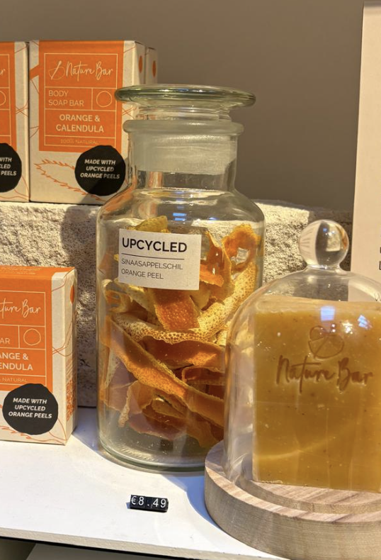

Wie ben ik?
Producten voor een droge en gevoelige huid
Als professioneel zwemmer heb ik van mezelf een droge en gevoelige huid. Hierdoor is het fijn om producten te hebben zonder onnodige toevoegingen.
Badkamer vol verpakkingen
Ik denk dat iedereen het wel kent: een badkamerkast vol met spullen die je niet gebruikt, wat heel veel ruimte in beslag neemt en zorgt voor veel afval na het gebruik. Daarnaast zijn de meeste doucheproducten zoals douchefoam al snel op en moet je elke maand of 2 wel een nieuwe kopen.
Nature Bar lost een groot probleem hiervan op. Ze hebben bijvoorbeeld pakketten waarbij maar 1 verpakking is per 5 zeepbars en hierdoor kan je een paar maanden minimaal door zonder veel natuurlijk afval. Daarnaast zijn de ingrediënten ook allemaal natuurlijk!
Hoe is Nature Bar duurzaam?